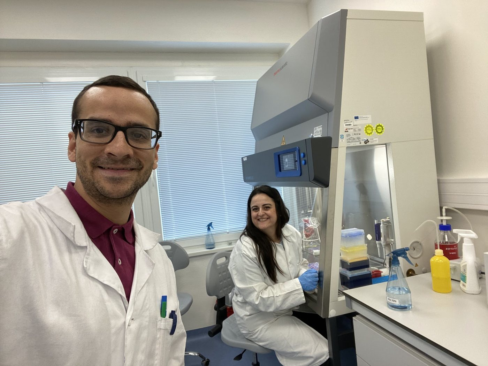
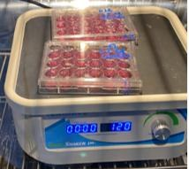
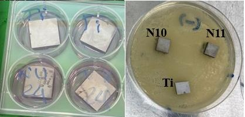
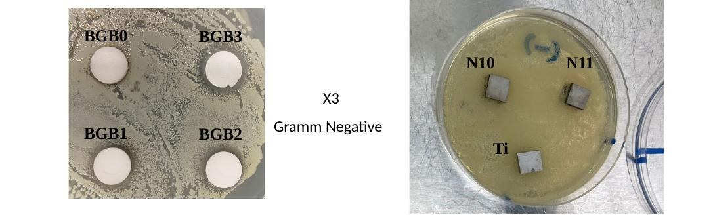
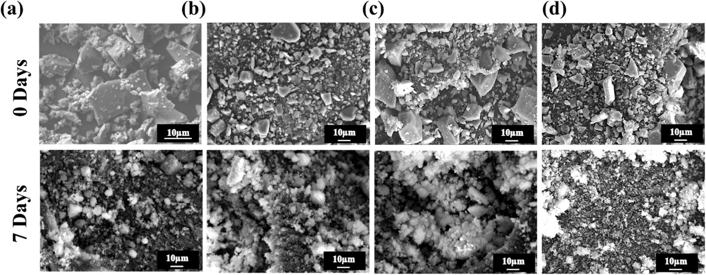

In vitro tests of powders and coatingsEnsayos in vitro de polvos y recubrimientos
Cell and antibacterial tests compare the silicate and borate glasses, first as powders and then as coatings.Los ensayos celulares y antibacterianos comparan los vidrios de silicato y de borato, primero como polvo y después como recubrimiento.
SummaryResumen
| FormForma | GlassVidrio | BioactivityBioactividad | Bone-like cellsCélulas de tipo óseo | BacteriaBacterias |
|---|---|---|---|---|
| PowderPolvo | SilicateSilicato | Forms apatite in simulated body fluid.Forma apatita en fluido corporal simulado. | Biocompatible.Biocompatible. | Antibacterial.Antibacteriano. |
| PowderPolvo | BorateBorato | Forms an apatite-like layer in simulated body fluid.Forma una capa tipo apatita en fluido corporal simulado. | —— | Tested directly on agar.Ensayado directamente en agar. |
| Plasma sprayProyección por plasma | SilicateSilicato | —— | Cells grow on the coating.Las células crecen sobre el recubrimiento. | Strongest effect on S. aureus.Mayor efecto frente a S. aureus. |
| Plasma sprayProyección por plasma | BorateBorato | —— | Concentrated extracts reduce cell activity.Los extractos concentrados reducen la actividad celular. | Active at high extract concentration.Activo con extractos concentrados. |
| Spray coatingSpray coating | SilicateSilicato | —— | Cells attach as on titanium.Las células se adhieren como en el titanio. | Active against Gram − and +.Activo frente a Gram − y +. |
| Spray coatingSpray coating | BorateBorato | —— | —— | Active against Gram − and +.Activo frente a Gram − y +. |
| EPDEPD | Borate + PEEKBorato + PEEK | —— | Cell activity rises with bismuth.La actividad celular aumenta con el bismuto. | Reduces E. coli and S. aureus.Reduce E. coli y S. aureus. |
Powder results for the silicate glass come from the papers inLos resultados de polvo del vidrio de silicato proceden de los artículos de Ceram. Int. 2024 andy Ceram. Int. 2025; borate powder bioactivity comes fromla bioactividad del polvo de borato procede de Ceram. Int. 2026.
How we testCómo ensayamos
Bone-like cells (MG-63) are grown either directly on the coatings or in liquid extracts from them. Two common bacteria, E. coli (Gram-negative) and S. aureus (Gram-positive), test the antibacterial effect of the glasses and coatings.Las células de tipo óseo (MG-63) se cultivan directamente sobre los recubrimientos o en extractos líquidos obtenidos de ellos. Dos bacterias comunes, E. coli (Gram negativa) y S. aureus (Gram positiva), ponen a prueba el efecto antibacteriano de los vidrios y recubrimientos.






Powders: silicate and boratePolvos: silicato y borato





CoatingsRecubrimientos


Plasma sprayProyección por plasmaSpray coatingSpray coatingElectrophoretic depositionDeposición electroforéticaRadiopacityRadiopacidad